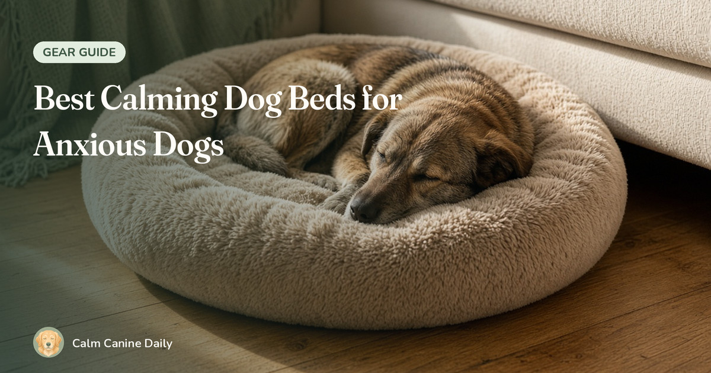

Best Calming Dog Beds for Anxious Dogs

Affiliate disclosure: Calm Canine Daily is reader-supported. Some links in this article are affiliate links, including our link to Brain Training for Dogs and our Amazon product links. As an Amazon Associate I earn from qualifying purchases. If you buy through an affiliate link, we may earn a commission at no extra cost to you. We don’t pretend to be the product makers, and no trainer or brand has endorsed this article just because we may recommend their work. This is general information, not a veterinary diagnosis or a promise of a specific result.
The best calming dog bed can be a very nice place to land. It cannot talk your dog out of a thunderstorm, a lonely afternoon, or a body that hurts.
Dogs often rest better in a familiar, slightly enclosed place that smells like them and supports the way they already like to sleep. Curlers often like a raised rim. Sprawlers usually need a flat, supportive mattress. For an older or large-breed dog, the conversation may be less about faux fur and more about actual foam.
A bed will not treat separation distress, noise phobia, or pain. If worry is new, sudden, or severe — panting and pacing for hours, destroying doors, refusing food, snapping when startled — talk with your veterinarian before you buy another cushion. We checked official brand pages on November 20, 2026.
Get the free 7-Day Calm Dog Checklist
A free week of short, kind habits to help everyday dogs practice settling and focus. You do not need a perfect session.
TL;DR
Match the bed to the sleeper, not to the marketing. Curlers and burrowers often like a donut with a raised rim, such as Best Friends by Sheri’s Original Calming Donut. Dogs who stretch out, especially larger or senior dogs, are usually better served by a supportive orthopedic mattress; Big Barker’s Original bed is the premium version of that idea, with at a higher price. If you want a bolstered “sofa” shape on a smaller budget, FurHaven’s orthopedic sofa-style beds are a widely available middle path.
Buy the size your dog can actually use today — and be ready to size up for a growing puppy. Place the bed in a quiet, predictable spot, and teach a simple settle so the bed becomes a place where good, boring things happen, not a timeout.
Quick comparison
Prices are from official brand pages on November 20, 2026, and may change by size, fabric, or promotion.
| Bed | Official price (Nov. 20, 2026) | Style | Best for |
|---|---|---|---|
| Best Friends by Sheri Original Calming Donut (shag fur) | $34.99 for 23"; $59.99 for 30"; $149.99 for 45" | Round nest with a raised rim; removable, machine-washable cover; water- and dirt-resistant bottom | Dogs who curl up or burrow |
| FurHaven Sofa Dog Bed (Quilted or Plush & Suede) | $29.99 listed on the official orthopedic collection | Bolstered sofa shape with an orthopedic base | Budget-friendly bolster beds for leaners and loungers |
| Big Barker Original Orthopedic Dog Bed | Starts at $249.95, with free domestic shipping listed | Flat, headrest, or sofa editions; 7 inches of three-layer foam; 10-year no-flatten foam warranty; 180-night trial | Large and giant dogs, seniors, and joint support |
Best Friends by Sheri Original Calming Donut Dog Bed · FurHaven Sofa Dog Bed · Big Barker Original Orthopedic Dog Bed
What “calming” usually means — and what it does not
Most beds sold as calming share a few design ideas: soft fabric, a raised edge, and a shape that lets a dog curl up or hide their face. Best Friends by Sheri describes the donut rim as creating a sense of security and a place to rest the head, and compares the faux fur to the feeling of a mother’s coat. That is a cozy story, and many dogs do seem to like the burrow. It is still a story, not a diagnosis.
A familiar bed can become part of a settle routine, the same way a particular chair becomes the place you drink tea. The calm comes from repetition, location, and what happens there — quiet, chews, a cue like “on your bed” — not from a special fiber that turns off worry. Be wary of any listing that says a bed will cure anxiety, stop barking, or replace training.
How to choose a size and a sleep style
Watch your dog for a couple of days before you click.
- The curler sleeps in a tight circle. A donut or a bed with a high bolster is usually the better match.
- The sprawler sleeps on their side with legs out, or on their back. They need a flat or lightly bolstered surface large enough for that stretch.
- The leaner likes to rest a chin or a spine against something. Sofa-style beds and donuts both can work.
- The burrower wants to tunnel under a blanket. A shag donut plus a light throw they can rearrange is often happier than a slick, flat cover.
Use the brand’s own chart. Best Friends by Sheri lists the 30-inch donut for dogs up to 45 pounds and the 45-inch donut for pets up to 150 pounds. The 23-inch size was listed at $34.99 on the official site; use the company’s chart for that size rather than assuming it will fit a growing dog for long. Big Barker sizes its Original bed by nose-to-base-of-tail length: Large for dogs up to 40 inches, XL up to 50 inches, and Giant for 50 inches or more.
If you share the house with a chewer, be honest. A plush donut is a stuffed toy in disguise to some dogs. No bed warranty we saw covers chewing. Big Barker states that covers and damage from chewing, accidents, or misuse are not included in the foam warranty.
The beds
1. Best Friends by Sheri Original Calming Donut
See Best Friends by Sheri Original Calming Donut Dog Bed on Amazon
This is the bed most people picture when they type “calming dog bed”: a round, high-sided nest in long faux fur. On the official site, the shag-fur 23-inch size was $34.99, the 30-inch was $59.99, and the 45-inch was $149.99. The 30-inch page lists colors including taupe, frost, dark chocolate brown, and cotton candy pink. The company describes a vegan polyester shell, AirLoft fiber fill, a water- and dirt-resistant bottom, and a removable zipper cover that can be machine washed on a gentle cycle and tumble dried on low (follow the label).
This style suits dogs who already try to sleep in laundry piles or with their back pressed to a wall. Deep faux fur is warm, which is a comfort for many dogs and a drawback in a hot climate or for a thick-coated breed in July. What we will not claim: that the fill relieves joint or muscle pain, even though the company uses comfort language like that on the product page. A fiber-filled donut is a nest, not an orthopedic mattress. If your dog is stiff getting up, look at a supportive foam bed — or ask your vet.
2. FurHaven Sofa Dog Bed
See FurHaven Sofa Dog Bed on Amazon
FurHaven’s official orthopedic collection listed several sofa-style beds, including a Quilted version and a Plush & Suede version, each at $29.99. These are the familiar three-sided “couch” beds: a cushioned base with bolsters to lean on and a more open front so a dog can step in easily. For a household that wants a headrest without paying premium-mattress money, this is a practical place to look.
Because the official page we checked was a category listing, confirm the exact size dimensions, weight guidance, and wash instructions on the specific product page before you buy. Prices on collection pages often represent a starting size. This style suits leaners and dogs who like a “back” behind them but still want to stretch toward the open side. It is a weaker match for serious burrowers and for giant breeds who need thick, medical-style foam.
3. Big Barker Original Orthopedic Dog Bed
See Big Barker Original Orthopedic Dog Bed on Amazon
Big Barker is not trying to be a cuddle nest. The Original orthopedic bed starts at $249.95 on the official site, with free domestic shipping listed, and it is aimed at large and giant dogs. The company describes 7 inches of foam in three layers (a 2-inch base, a 3-inch support layer, and a 2-inch comfort layer), CertiPUR-US certified foam made in the USA, and three silhouettes: a flat Sleek Edition, a Headrest Edition, and a Sofa Edition with raised edges. The cover is removable and machine washable (cold water; tumble dry with no heat or hang dry). The company recommends washing the cover before first use to reduce the chance of dye transfer.
Two policies are worth reading in full on the site. The foam has a 10-year “no-flatten” warranty that, according to Big Barker, guarantees the foam will retain at least 90% of its original shape and support; covers and chewing or accident damage are excluded. There is also a 180-night sleep trial. The official rules we saw ask you to donate the bed to a local shelter if you request a refund, and embroidered or upgraded beds are listed as final sale.
Big Barker cites a University of Pennsylvania School of Veterinary Medicine study. We are not repeating specific study percentages here, because we did not independently review that research. The facts we can hang onto are the foam thickness, the size range for big dogs, and the long foam warranty. This is a lot of money, easier to justify for a large dog, a senior, or a dog your vet is already managing than as a first bed for a small, healthy curler.
How to turn a bed into a resting place
A bed is a place. Settling is a skill. For the five-minute mat routine that pays stillness, see Why a Tired Dog Still Won’t Settle.
Put the bed where your dog already tries to rest, or in a quiet corner they can see the family from without being in the middle of traffic. Forcing a nervous dog into a back room “so they can calm down” often backfires.
Teach a simple pattern: say a plain cue such as “on your bed,” toss a treat onto the bed, and wait. When they step on, drop another treat between their paws. End before they get restless. Over days, you can wait for a sit, then a down, then a little lingering. A lightly stuffed chew or a thinly spread lick mat, used only on the bed, can help some dogs park themselves there while you cook.
If your dog will not get on the new bed, do not scold. The fabric may smell strange, or the location may feel exposed. Add a blanket that already smells like home, and give it a few quiet days.
Skip the bed as your main intervention — or add professional help — if you see panic when you leave, trembling that does not ease, sudden restlessness that could be pain, or growling when approached while resting.
A cozy bed is the landing place. Training is how your dog learns to use it.
A well-chosen bed can make rest more comfortable. It does not teach a worried or restless dog how to settle, and it does not replace help for serious anxiety. If you want a force-free, at-home program of short mental games and manners work — including impulse control and settling — take a look at Brain Training for Dogs, created by CPDT-KA trainer Adrienne Farricelli.
FAQ
Do calming dog beds really reduce anxiety?
They can make a resting spot more inviting, which sometimes takes the edge off mild unease if you also teach a settle routine. They are not a treatment for clinical anxiety.
My dog won’t sleep in the new bed.
Try a familiar blanket, a different room, or a short “on your bed” game. Some dogs need days. Some prefer the floor or an open crate.
How often should I wash a dog bed?
Often enough that it does not smell sour, and not so often that a nervous dog loses every familiar scent at once. Follow the care label.
Are orthopedic beds better for anxious dogs?
They are better for many dogs who need joint support. Anxiety and joint pain can look similar, so involve your vet if you are not sure what you are seeing.
Can I use a calming bed in a crate?
Only if it fits without blocking airflow, and only if your dog will not shred it. A plush donut is a poor crate match for a chewer or a puppy who still has accidents.
Get the free 7-Day Calm Dog Checklist
If you want a simple, free plan for practicing settle habits at home this week, the 7-Day Calm Dog Checklist is ready to download.
Related guides
- Why a Tired Dog Still Won’t Settle
- Best puzzle toys for bored, hyper dogs
- Best dog crates for crate training a puppy
- Brain Training for Dogs review
- Calm and settling guides
- Get the free 7-Day Calm Dog Checklist
Sources and product pages checked
Prices, sizing, and feature details were checked on the official pages below on November 20, 2026. They can change.
- Best Friends by Sheri (brand home, including 23" donut listing): https://bestfriendsbysheri.com/
- Best Friends by Sheri Original Calming Donut, 30": https://bestfriendsbysheri.com/products/the-original-calming-dog-bed-donut-cuddler-shag-fur-30x30
- Best Friends by Sheri Original Calming Donut, 45": https://bestfriendsbysheri.com/products/the-original-calming-dog-bed-donut-cuddler-shag-fur-45x45
- FurHaven orthopedic bed collection: https://furhaven.com/collections/fh-orthopedic-beds
- Big Barker Original Orthopedic Dog Bed: https://bigbarker.com/products/orthomedic-dog-bed
- 7-Day Calm Dog Checklist: https://calmcaninedaily.systeme.io/free-checklist?utm_source=blog&utm_medium=cta&utm_campaign=checklist&utm_content=best-calming-dog-beds-for-anxious-dogs-end